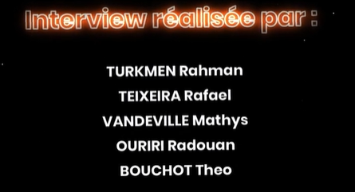
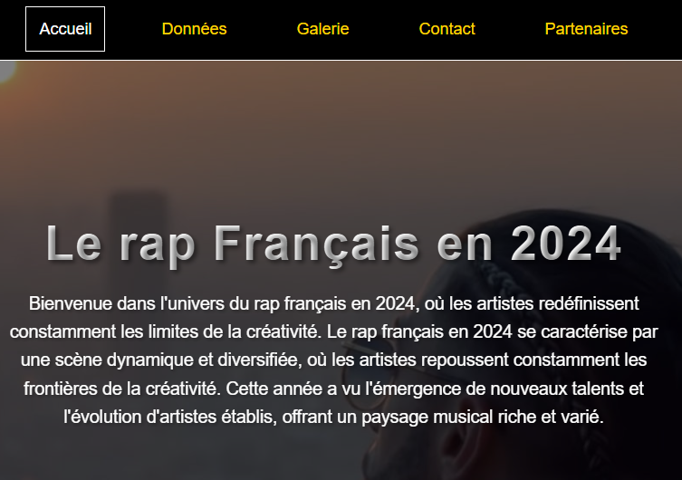
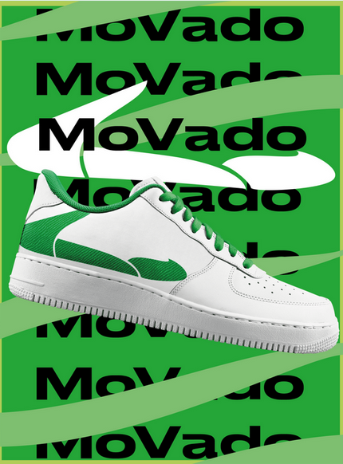
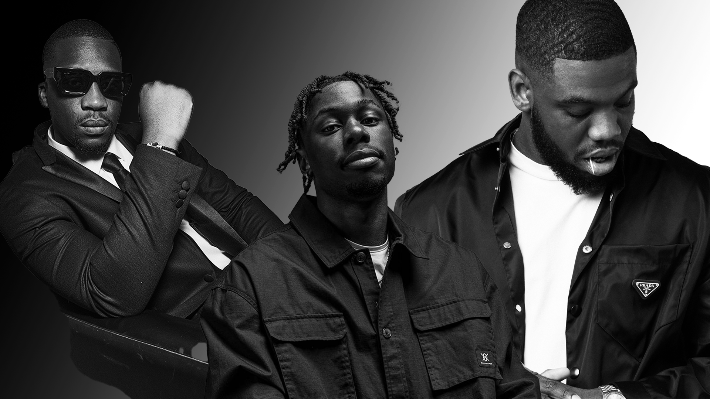
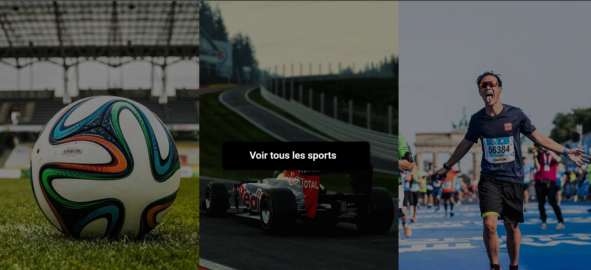
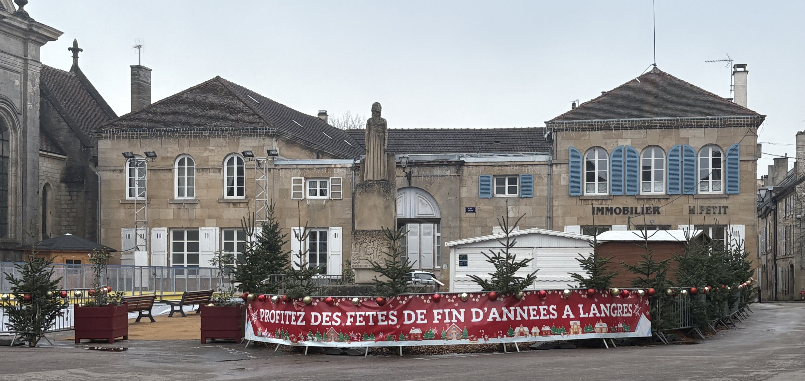
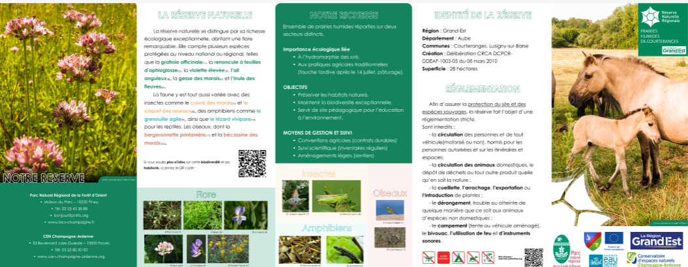

Projet 1 : Interview Vidéo
Audiovisuel & Storytelling
Contexte : Réalisation complète d'une capsule vidéo type "Reportage" sur la passion de la musculation, tournée en conditions réelles.
- 🎯 Le Défi : Capturer l'authenticité d'une séance de sport sans déranger les usagers, tout en gérant une acoustique difficile (bruit ambiant, musique de salle).
- 🛠️ La Solution :
• Pré-production : Négociation des accès et repérage technique pour identifier les zones calmes.
• Tournage : Utilisation de micro-cravates pour isoler la voix et plans B-roll stabilisés pour dynamiser le montage.
• Post-production : Montage rythmé sur Premiere Pro, étalonnage pour une ambiance "sport" contrastée.
- ✨ Compétences clés : Gestion de projet, Relationnel client, Prise de vue/son, Montage (Adobe Premiere).
Voir la vidéo sur YouTube

Projet 2 : Média Rap Français
Développement Front-End
Contexte : Création "From Scratch" d'un site média immersif dédié à l'actualité du rap urbain en 2024.
- 🎯 Le Défi : Se démarquer des géants comme Booska-P avec une identité visuelle forte tout en garantissant un temps de chargement ultra-rapide.
- 🛠️ La Solution :
• UI Design : Adoption d'un "Dark Mode" avec des accents néons pour coller aux codes de la culture urbaine.
• Tech : Code pur (HTML5/CSS3) sans framework lourd pour une performance maximale. Optimisation des assets graphiques.
• UX : Navigation simplifiée pensée pour une consommation rapide de l'information.
- ✨ Compétences clés : HTML/CSS Avancé, Responsive Design, Optimisation Web, Culture Graphique.
Visiter le site

Projet 3 : Marque Movado V
Stratégie Marketing & Branding
Contexte : Lancement fictif d'une marque de sneakers éco-responsables positionnée contre la Fast Fashion.
- 🎯 Le Défi : Convaincre une cible Gen Z sceptique sur le Greenwashing et créer une communauté engagée autour de la marque.
- 🛠️ La Solution :
• Positionnement : Marque "Slow Fashion" transparente utilisant des matériaux 100% recyclés.
• Communication : Stratégie Social Media (TikTok/Insta) axée sur l'UGC (User Generated Content) et les challenges viraux.
• Identité : Branding épuré et naturel inspiré par l'environnement urbain durable.
- ✨ Compétences clés : Analyse de marché, Copywriting, Gestion des réseaux sociaux, Branding.
Voir le dossier Stratégique (PDF)

Projet 4 : Application Web Dynamique
Développement Back-End (PHP/SQL)
Contexte : Développement d'une plateforme musicale avec gestion d'utilisateurs et base de données complexe.
- 🎯 Le Défi : Passer d'un site statique à une application dynamique sécurisée capable de gérer des milliers d'entrées (artistes, albums).
- 🛠️ La Solution :
• Architecture : Structure MVC (Modèle-Vue-Contrôleur) pour un code maintenable.
• Base de Données : Modélisation MCD/MLD et requêtes SQL complexes pour lier Artistes/Albums/Utilisateurs.
• Sécurité : Hachage des mots de passe (Argon2id), protection CSRF et injections SQL.
- ✨ Compétences clés : PHP, MySQL, Cybersécurité, Architecture logicielle.
Tester l'application

Projet 5 : Intégration CMS
WordPress & Elementor
Contexte : Intégration fidèle d'une maquette graphique complexe pour un site de découverte sportive.
- 🎯 Le Défi : Respecter au pixel près une maquette Figma stricte en utilisant un CMS, sans casser le design sur mobile.
- 🛠️ La Solution :
• Technique : Utilisation avancée d'Elementor Pro et ajout de CSS personnalisé pour les éléments non-standards.
• Méthodologie : Workflow professionnel : Installation serveur -> Configuration thème -> Intégration -> Recettage.
• Responsive : Adaptation manuelle des breakpoints pour tablettes et mobiles.
- ✨ Compétences clés : CMS WordPress, Elementor, CSS Custom, Rigueur d'intégration.
Voir le site

Projet 6 : UI/UX Design System
Prototypage Figma
Contexte : Conception de l'interface utilisateur (UI) du site de sport avant son développement.
- 🎯 Le Défi : Organiser une grande quantité d'informations (règles, clubs, histoire) de manière intuitive pour un néophyte.
- 🛠️ La Solution :
• UX Research : Création de personas et tri des cartes pour définir l'arborescence.
• UI Design : Création d'un Design System atomique (Couleurs, Typos, Boutons) pour assurer la cohérence.
• Prototypage : Maquettes haute-fidélité interactives pour tester le parcours utilisateur.
- ✨ Compétences clés : Figma, Design System, Prototypage interactif, Ergonomie.
Voir la maquette (PDF)

Projet 7 : Communication Visuelle
Design Print Grand Format
Contexte : Projet réel en alternance. Habillage de la patinoire municipale pour les festivités de fin d'année.
- 🎯 Le Défi : Concevoir un visuel lisible et esthétique sur un format extrême (9 mètres de long sur 90cm de haut).
- 🛠️ La Solution :
• Direction Artistique : Création d'une fresque vectorielle hivernale et dynamique.
• Technique : Gestion des contraintes d'imprimeur (fonds perdus, mode CMJN, résolution 300dpi à l'échelle).
• Validation : Itérations avec le service communication de la Ville de Langres.
- ✨ Compétences clés : Illustrator, InDesign, Chaîne graphique, Gestion client.
Voir le visuel HD

Projet 8 : Concept UI - Portfolio
Exploration Créative
Contexte : Exercice de style libre visant à repenser l'expérience d'un portfolio créatif.
- 🎯 Le Défi : S'affranchir des contraintes techniques pour proposer une interface purement émotionnelle et visuelle.
- 🛠️ La Solution :
• Direction Artistique : Ambiance "Luxury Dark" utilisant des jeux de transparence (Glassmorphism) et des typographies éditoriales.
• Layout : Utilisation d'une grille Bento asymétrique pour casser la monotonie.
- ✨ Compétences clés : Créativité, Veille graphique, UI Design avancé.
Voir la maquette (PDF)

Projet 9 : Dépliant Pédagogique
Design Print & Édition
Contexte : Création d'un dépliant ludique et informatif pour les prairies humides de Courterange, au cœur de la Forêt d'Orient.
- 🎯 Le Défi : Sensibiliser le public à un écosystème complexe en créant un support physique attractif qui donne réellement envie d'être lu.
- 🛠️ La Solution :
• Éditorial : Vulgarisation des informations environnementales pour les rendre accessibles à tous.
• Création Graphique : Mise en page dynamique et création d'illustrations sur-mesure pour capter l'attention.
• Technique : Gestion rigoureuse des contraintes d'impression pour un format dépliant (gestion des plis, marges, fonds perdus).
- ✨ Compétences clés : Illustrator, InDesign, Design d'édition, Vulgarisation de contenu.
Voir le dépliant (PDF)